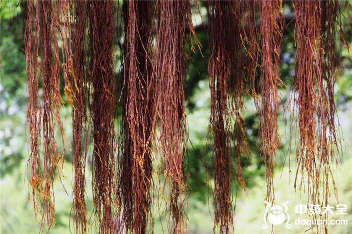

中药材植物名:榕)(植物科目:桑科

植物名：榕。
生长环境：本品为常绿大乔木。我国南部随处可见，尤于村落旁最多。
分布：我国南部地区到处皆可见，但干燥之山地少见，此外亚洲热带地区亦有分布。
入药部分：吊须（榕树有三种：大叶榕、细叶榕、飞榕，本品即是细叶榕树横枝部的吊须）。
采集期：全年采吊须、叶。
自采地点：市郊。
性味：性凉、味淡。
功能：散瘀热、清眼热。
主治、用量和用法：1、外感发热，配伍用；2、伤寒夹色，配伍用；3、麻疹不透：干用适量，煎水洗身；4、铜鼓钉：干用2两、猪瘦肉适量，清水煎服；5、眼热：干用5钱至1两，清水煎服；6、痔疮：煎水熏肛门。
验方1：（治夹色伤寒方）榕树须1两，鬼羽箭5钱、鸭脚树根皮5钱、扁柏叶5钱、老虎脷5钱、清水五碗，煎成一碗，热服。
（方解）风寒中于人，邪留表而不传里，以里不虚之故，房劳而里虚，则外邪内传，迅速化热，此为夹色。故治伤寒夹色，取解表邪清里热之法。本方榕树须、鬼羽箭、鸭脚树皮、俱为解表清里之药，老虎脷清热毒、扁柏凉血，合为解表清热、凉血散毒之剂。
（方歌）夹色伤寒榕树须，鬼羽箭来老虎鸣，鸭脚树皮扁柏叶，热清毒解病能苏。
禁忌：麻风病者服之，其皮肤之症状更形显露。
附录：（叶）治跌打外伤积瘀：用生叶擂烂，加酒煮热敷患处。（乳）治眼热：天明前将横枝近梢部斩一刀口，有乳汁流出，用杯接取约5钱，加白糖冲入热粥内，搅匀服食。
参考资料：《广东省中医验方交流汇编》内记载治乳疮方：用榕树叶8两，擂烂，用酒四两蒸熟，取汁饮之，其渣加面粉煎糊敷患处。
《广东中医锦方选集第一集》广州市华林卫生所治鹅喉验方：榕树须6两、黑醋一汤碗，煎好含漱，治鹅喉三百余例，有二百七十多例见效。
《广州市中医验方选集第一集》市一人民医院治疳眼有膜方：榕树向东边取胶二钱，调白粥或蒸猪肉连服数日。
《广州常用草药验方集解》治疗眼热经验方：干榕树叶6钱、干蒲公英1两，清水煎服。
（方解）民间用榕树叶煎水洗眼，治眼热病，历验不爽，本方配以清热解毒之蒲公英，合为内服之剂，功效更佳。
（方歌）眼热民间有验方，干榕树叶六钱当，蒲公英配足一两，热清毒解复平安。